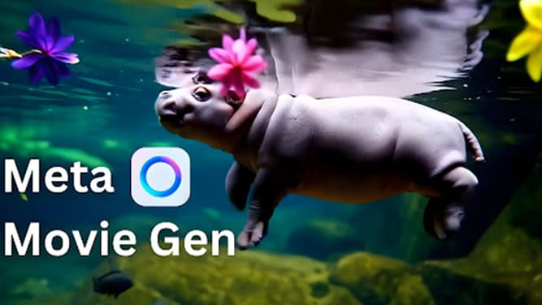
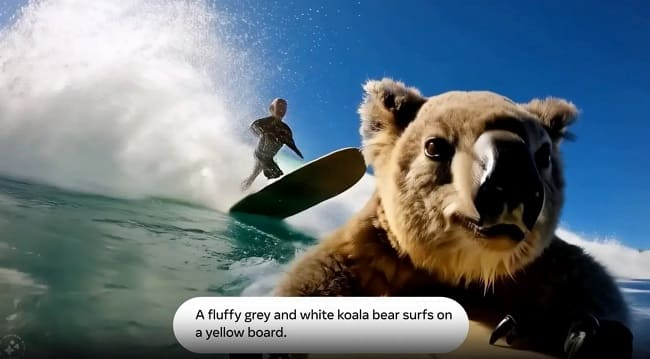

Meta Introduces Movie Gen: AI-Powered Video Generation Model
Meta has unveiled a new AI model called Movie Gen, which can generate 16-second video clips based on user text descriptions. The interesting part is that these near-realistic clips are accompanied by background music and appropriate sound effects.
AI-based tools are constantly evolving. For instance, there are tools powered by AI that can create images, videos, or even music tracks. However, until now, no tool had been introduced that could produce all of these elements and present them together. Meta (formerly Facebook) has now introduced a new AI model called Movie Gen, which can generate near-realistic video clips with sound based on user descriptions.
Movie Gen: The Most Powerful AI Video Creation Tool
According to Meta’s engineers, the Movie Gen AI can compete with media creation tools from companies like OpenAI and ElevenLabs, and easily outshine them. To prove this, Meta has shared several output samples from Movie Gen, showcasing animals swimming and surfing, as well as clips of a person painting.
As mentioned, the most notable feature of this new AI model is that, in addition to generating near-realistic videos, it can create synchronized background music and sound effects. Additionally, Movie Gen can also edit and modify existing videos.
Despite all these capabilities, Movie Gen does have limitations. According to PhoneArena, this new AI tool can only create clips up to 16 seconds long. However, users can generate audio clips up to 45 seconds if needed.
According to a blog post and research paper published by Meta, the Movie Gen AI has been trained on licensed data and publicly accessible datasets.
What do you think about this new AI model? Will AI become a dangerous tool for content creators, or will it help them?